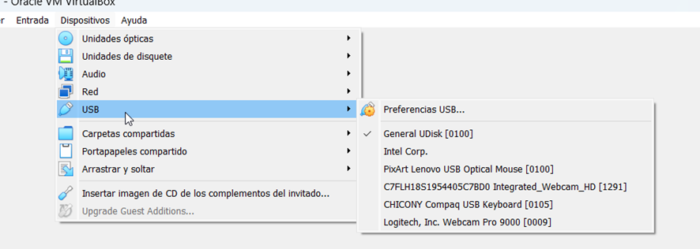
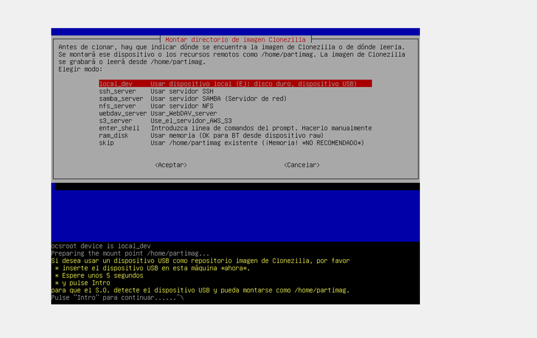
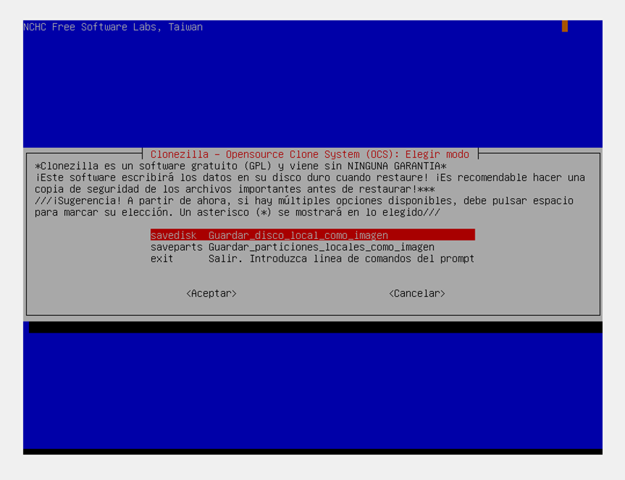

Como hacer una instalación masiva de INFOG con Clonezilla
1. Una vez tenemos el Win7 con los programas que queremos, configuramos el fichero iso de clonezilla como unidad de CD para poder arrancar desde el CD y crear una copia del equipo
2.- Iniciamos máquina virtual y presionamos F12 para elegir que arranque desde CD, e iniciamos el clonezilla
3.- Habilitamos USB en la máquina virtual para que la imagen se genere en el USB

4.- Configuramos para copiar disco de la máquina virtual a una imagen que se almacenará en el USB


5.- Una vez configurada la copia, elegimos que se reinicie al finalizar y esperamos a que acabe el proceso
6.- Al finalizar el proceso tendremos una imagen del SO que podremos copiar a un servidor y desde el clonezilla restaurar dicha imagen a otros PCs.